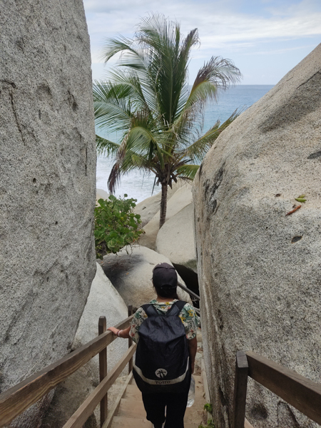

About me
Hi there!
My name is Daniela, I'm 26 years old, and I was born in Bogota, the capital city of Colombia. I have a degree in Industrial Design from the University of Colombia, which I finished in 2019, but eventually fell more in love with graphic design stuff and decided to work primarily in that field.
I'm currently working remotely and full-time as a UX/UI for a company based in USA and Colombia, called Webcat. So far I'm in love with it.
I decided to study something that gave me more resources to become better at my job and eventually reach more favorable and higher positions, and Interactive Media Design, turned out to be a great option.
I recently had to say goodbye for a while to my home country, its amazing food, weather, lovely people and of course my family, which is why I picture myself in the short term meeting with them and traveling around. Would also love to attend a master's degree and work in the tech industry.
Now, a motivational quote...kinda mainstream, but a nice reminder
Stay hungry, stay foolish - Steve Jobs